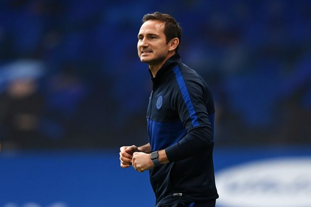
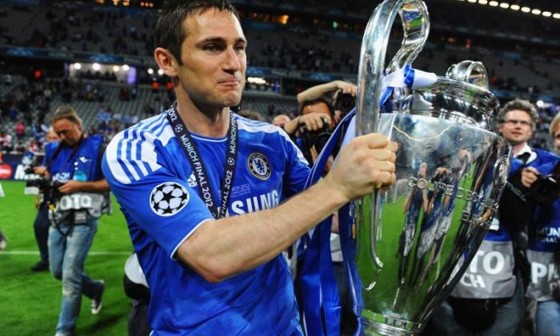
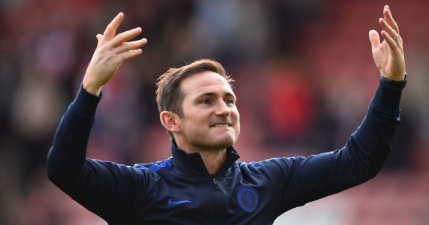
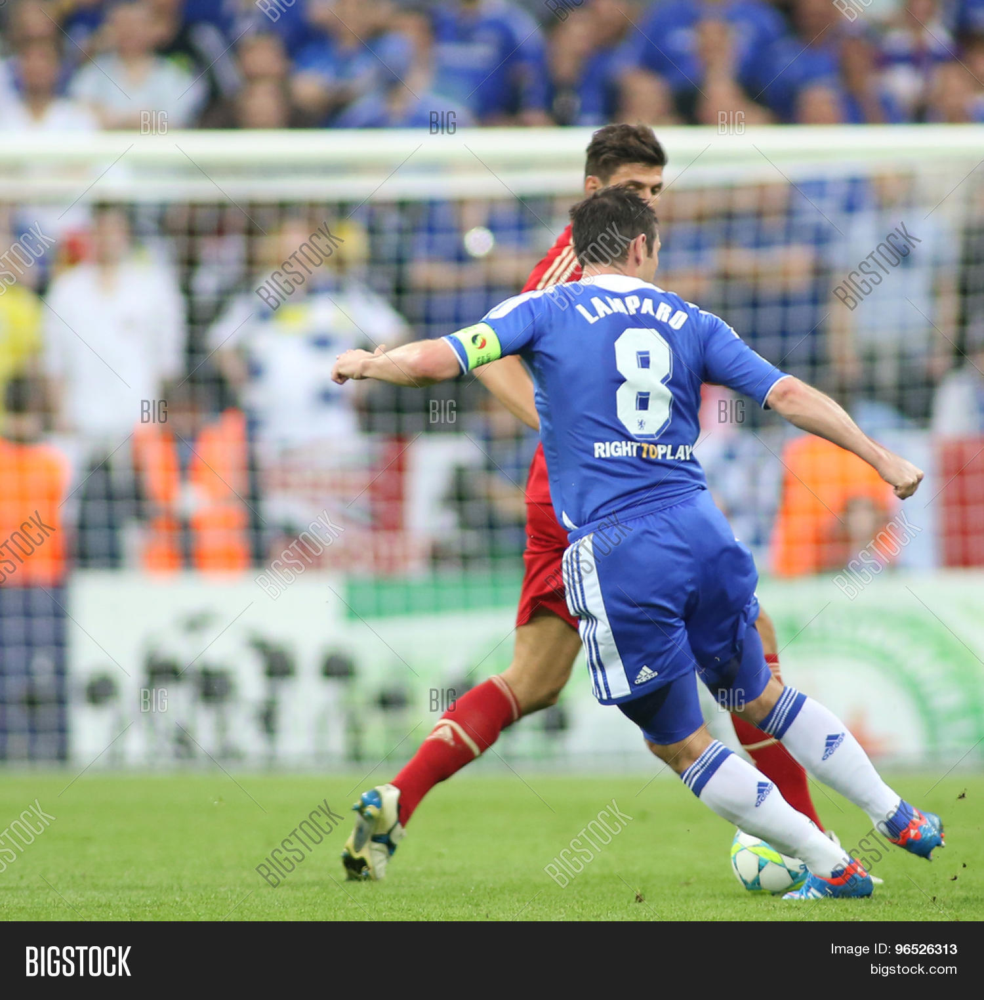
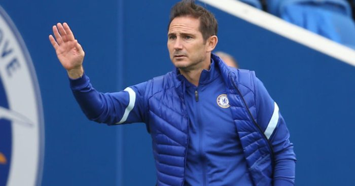
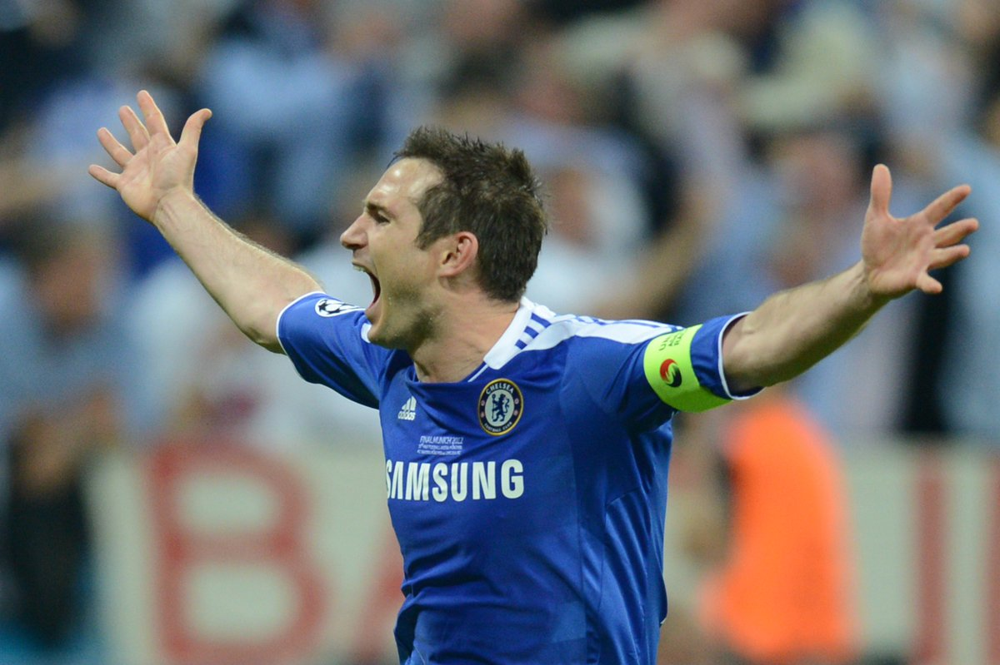
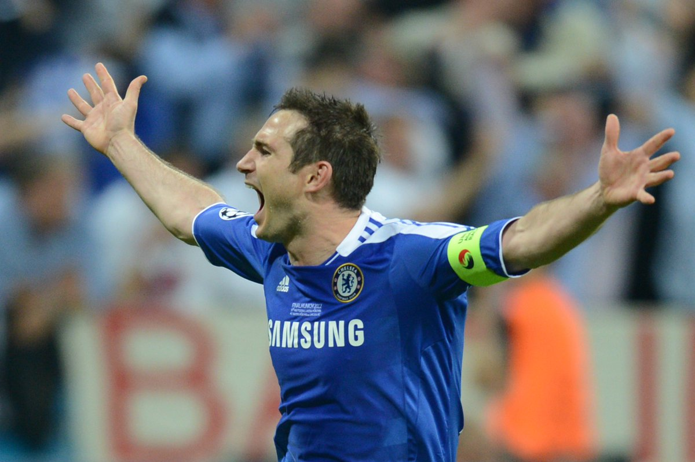
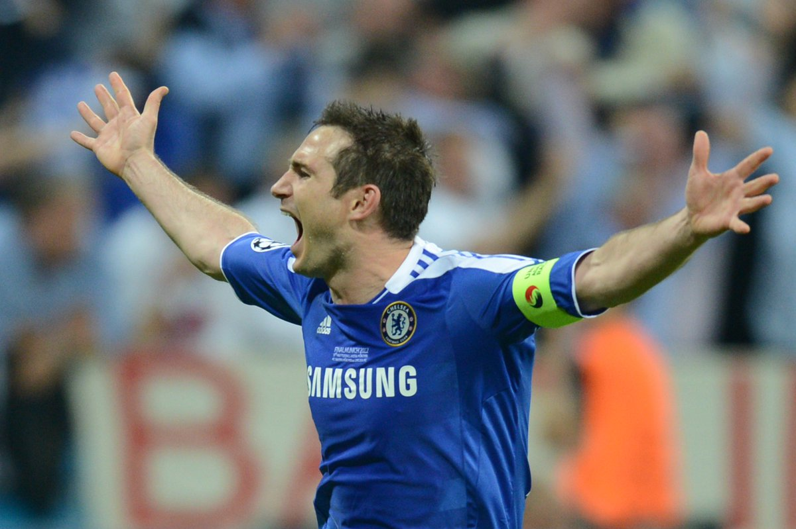

Frank Lampard





 


How many goals did Frank Lampard score for Chelsea?
Frank Lampard is our all-time leading goalscorer with 211 goals to his name.
He broke Bobby Tambling’s previous best when he netted his 203rd goal away at Aston Villa on 11 May 2013. It was also
the winning goal and he equalled the record earlier that same game.
Lampard is also our all-time top-flight league scorer. He found the net 147 times in Premier League games for the Blues.
He is our top all-time FA Cup scorer with 26 goals.
He is our second highest scorer in Europe with 25, behind Didier Drogba on 34. Lampard scored 23 goals in the Champions League
He is our second highest scorer in the League Cup on 12, behind Kerry Dixon on 25.